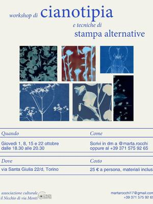
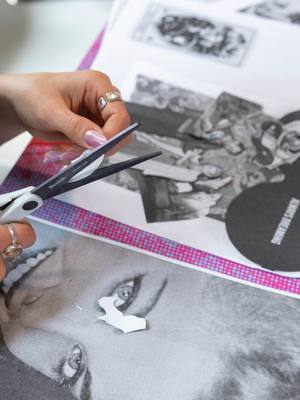

Workshop di stampa a Torino e dintorni
Workshop e corsi di serigrafia, cianotipia, incisione, risograph e stampa botanica a Torino e dintorni.
Cerca con tutti i filtri12 attività in arrivo · aggiornato il 21 ottobre 2026

gio22ottStampaWorkshop di cianotipia: stampa alternativagiovedì 22 ottobre, 18:30–20:30Vanchiglia (TO) · 25 €con Marta Rocchi per Il Nicchio di via Monti
dom25ottStampaWork in Progress: serigrafia intensivadomenica 25 ottobre, 10:00–13:30Barriera di Milano (TO)con Print Club Torino- dal2novStampaCorso di cianotipia: stampa con la luceda lunedì 2 novembre a lunedì 23 novembre, ogni lunedì, 18:30–20:30Aurora (TO) · 70 €con Officine Creative Torino
 dom8novStampaStampa botanica: le basidomenica 8 novembre, 10:00–13:00San Donato (TO) · 55 €con Patrizia Berto (Startlap) per Orso Objetos
dom8novStampaStampa botanica: le basidomenica 8 novembre, 10:00–13:00San Donato (TO) · 55 €con Patrizia Berto (Startlap) per Orso Objetos sab14novStampaPinte & Foglie: stampa botanica su cartasabato 14 novembre, 10:00–13:00San Donato (TO) · da 20 €con Pintology con Laudisia Colonnelli
sab14novStampaPinte & Foglie: stampa botanica su cartasabato 14 novembre, 10:00–13:00San Donato (TO) · da 20 €con Pintology con Laudisia Colonnelli dom15novStampaStampa botanica: copertina vettore coloredomenica 15 novembre, 10:00–13:00San Donato (TO) · 55 €con Patrizia Berto (Startlap) per Orso Objetos
dom15novStampaStampa botanica: copertina vettore coloredomenica 15 novembre, 10:00–13:00San Donato (TO) · 55 €con Patrizia Berto (Startlap) per Orso Objetos sab21novStampaOne Day Riso Book: il tuo libro in risographsabato 21 novembre, 09:30–17:30Lingotto (TO) · 80 €con Print Club Torino
sab21novStampaOne Day Riso Book: il tuo libro in risographsabato 21 novembre, 09:30–17:30Lingotto (TO) · 80 €con Print Club Torino sab28novStampaCartoline in risograph: tra le paginesabato 28 novembre, 10:30–12:30Borgo Po (TO) · 20 €con Print Club Torino
sab28novStampaCartoline in risograph: tra le paginesabato 28 novembre, 10:30–12:30Borgo Po (TO) · 20 €con Print Club Torino dal29genStampaMasterclass di incisione: acquaforte e altreda venerdì 29 gennaio, 09:30–17:30Lingotto (TO) · 370 €con Giancarlo Busato per Print Club Torino
dal29genStampaMasterclass di incisione: acquaforte e altreda venerdì 29 gennaio, 09:30–17:30Lingotto (TO) · 370 €con Giancarlo Busato per Print Club Torino dal19febStampaMasterclass passoA2: disegno e animazioneda venerdì 19 febbraio a domenica 21 febbraio, 18:30Lingotto (TO) · 300 €con Margherita Premuroso per Print Club Torino
dal19febStampaMasterclass passoA2: disegno e animazioneda venerdì 19 febbraio a domenica 21 febbraio, 18:30Lingotto (TO) · 300 €con Margherita Premuroso per Print Club Torino dataa sceltaStampaIncisione su linoleum: il tuo timbroData a sceltaSan Salvario (TO) · da 40 €con Mosca Bianca di Gaia Sandrelli
dataa sceltaStampaIncisione su linoleum: il tuo timbroData a sceltaSan Salvario (TO) · da 40 €con Mosca Bianca di Gaia Sandrelli- dataa sceltaStampaCorso di serigrafia: stampa su maglia e cartaData a sceltaAurora (TO) · 90 €con Officine Creative Torino